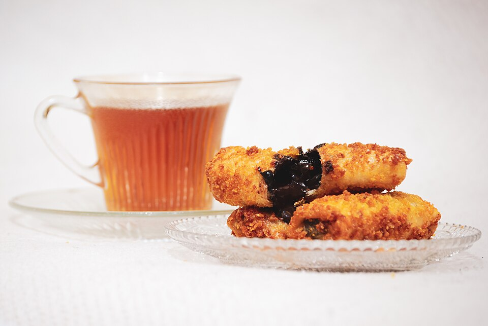

Salgados
Pastéis cozidos (risoles)

Massa
- 3 copos de leite (ou caldo de carne)
- 3 xícaras (chá) de farinha de trigo
- 2 colheres (sopa) de manteiga
- 1 colher (sopa) de sal
Recheio e empanado
- Creme de camarão ou frango
- Ovo batido
- Farinha de rosca
- Óleo para fritar
Modo de preparo
- Leve ao fogo o leite (ou caldo), a manteiga e o sal. Quando começar a ferver, acrescente toda a farinha de uma vez.
- Mexa com colher de pau até a massa desgrudar e aparecer o fundo da panela.
- Despeje ainda quente na mesa e sove até ficar bem lisa. Deixe esfriar um pouco.
- Abra a massa, recorte, recheie com creme de camarão ou frango e feche. Passe no ovo batido e na farinha de rosca.
- Frite em óleo quente até dourar.
Observação: anotações à mão preferem leite e 1 colher (sopa) de sal. Empanado completa o final cortado na foto.